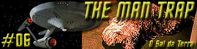
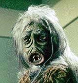
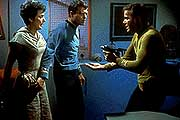
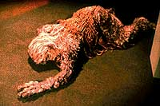

|
Srie
Clssica
Temporada 1

Anlise do episdio por
Salvador Nogueira


|
MANCHETE
DO EPISDIO Data Estelar: 1513.1.  A Enterprise chega ao planeta M-113 para entregar suprimentos para o Dr. Robert Crater e sua esposa, Nancy, com quem o Dr. Leonard McCoy esteve uma vez romanticamente envolvido. Os Crater j estavam em M-113 durante cinco anos, conduzindo uma pesquisa arqueolgica nas runas do planeta. Acreditava-se que eles eram os nicos habitantes do planeta.Crater diz a Kirk que a nica coisa que eles precisam de tabletes de sal. Alm disso, tudo que desejam serem deixados a ss. Kirk discorda, insistindo em que eles devem precisar de outros suprimentos e precisam ao menos permitir que McCoy os examine. Enquanto se d essa discusso, Darnell, um dos membros do grupo de descida, encontra uma jovem mulher e a segue. Quando Kirk sai a procura do tripulante, encontra-o morto, e em seu corpo h estranhas marcas circulares. O capito ordena que os Craters sejam levados para a Enterprise. Na nave, McCoy demonstra sua surpresa ao comentar como Nancy tinha mudado pouco desde o ltimo encontro dos dois, vrios anos atrs. A volta de Nancy desenterrou alguns sentimentos no bom doutor que esconderam qualquer suspeita que ele normalmente teria. No entanto, a mulher que McCoy v como Nancy Crater um ser metamorfo, o ltimo sobrevivente de M-113, e pode literalmente aparecer como um ser diferente para cada pessoa que encontra. Invadindo as mentes das pessoas e extraindo suas memrias, a criatura pode conduzir suas potenciais vtimas a um falso senso de segurana antes de mat-las. O problema enfrentado pela criatura a necessidade por cloreto de sdio - sal. Sem ele, ela ir perecer. Em seu planeta natal, o sal est acabando. O resto de sua raa morreu por conta desta excassez, e esta ltima sobrevivente havia estabelecido uma relao simbitica com o professor Crater. O pesquisador fornecia o sal necessrio a sua sobrevivncia e em troca a criatura se transformaria em Nancy... algo que vinha acontecendo desde o assassinato de sua esposa pela criatura, para absoro de seu sal. Acidentalmente levada para a Enterprise, a criatura comea a matar tripulantes. Enquanto caado por Kirk e seus comandados, o ser mata Robert Crater e transforma-se novamente em Nancy, quase matando McCoy. Kirk e Spock, que descobriram a estratgia da criatura, correm para os aposentos do doutor e convencem-no de que aquela no a verdadeira Nancy. Em meio ao sofrimento, McCoy decide por matar a criatura, salvando a si prprio e a tripulao.
"The Man Trap"
um episdio que evita grandes discusses filosficas. Na verdade,
fica muito clara a preferncia do autor Ainda assim, a histria acaba tocando em alguns temas interessantes. Apesar de no parecer primeira vista, "The Man Trap" uma histria carregada de cargas ideolgicas, expressas metaforicamente em dois pontos da histria. A relao simbitica estabelecida entre o professor Crater e a criatura de M113 expe de forma bastante clara um conflito de "princpios" versus "convenincia".  Apesar do cientista saber que a criatura tem comportamentos altamente reprovveis, ele a protege, fugindo de seus princpios com o intuito no de proteger a criatura, mas sim de proteger o prprio "paraso" que ela proporciona ao fingir ser sua esposa. A motivao de Crater no a preservao da criatura;meramente sua convenincia. O segundo conflito estabelecido no episdio
entre a "razo" versus "amor", e
protagonizado pelo Dr. McCoy e a sua dificuldade de perceber a
verdade, ofuscado pela paixo antiga Nos dois casos, o desfecho desses conflitos
deixa transparecer Os "princpios" vencem a
"convenincia", j que o professor Analogamente, a "razo" supera o
"amor" e McCoy acaba percebendo (com uma demonstrao
contundente proporcionada por Spock, ningum menos do que o smbolo
maior da lgica e Um ponto fraco deste episdio que acaba manchando a imagem que temos de Jornada nas Estrelas o desenvolvimento do roteiro no que diz respeito criatura.  primeira vista, falta compreenso para a tripulao da Enterprise. A criatura tratada como um monstro do comeo ao fim; Kirk e seus comandados no param um segundo parapensar que a criatura inteligente e que portanto segue padres de comportamento que visam a um propsito. No entanto, se olharmos para a maneira como a criatura se comporta ao longo do episdio, vemos que no h um despropsito to grande em encar-la desta maneira. No prlogo, ainda havia sal no estoque dos
Crater e ainda assim Logo, o grande problema no a suposta
cegueira da tripulao Esse formato de concepo do inimigo "aliengena" tem muita relao com o esprito dos anos 50 e 60, que ficaram marcados por histrias de fico cientfica em que os alenigenas so vistos apenas como o mal personificado. Essa viso do inimigo no faz jus tradio de Jornada nas Estrelas, como se comprovaria mais tarde em episdios como "Balance of Terror" ou "Spectre of the Gun". De qualquer maneira, falta sim ao pessoal da
Enterprise um Em termos de desenvolvimento dos personagens, quem saiu ganhando mais em "The Man Trap" foi a tenente Uhura. O dilogo que ela tem com o sr. Spock na ponte e o relacionamento dela com a criatura (que se disfara como o homem dos sonhos dela) ajudam a traar parte do perfil psicolgico da oficial de Comunicaes. Em compensao, a ordenana Rand mais uma vez cumpre o mero papel de "garonete" da nave, levando comida para Sulu no laboratrio de botnica da Enterprise. O personagem que tinha maior potencial para evoluo neste episdio era sem dvida Leonard McCoy, em funo de seu relacionamento prvio com Nancy Crater. Infelizmente, pela qualidade do argumento, ficou s no potencial. Mesmo assim, v-se o carter humanista e sonhador de McCoy nos momentos em que interagiu com a falsa Nancy.
Kirk - "He's all yours, plum...
Dr. McCoy." Spock - "Vulcan
has no moon, miss Uhura." Uhura - "I'm not
surprised, mr. Spock."
Escrito por George
Clayton Johnson Elenco: |